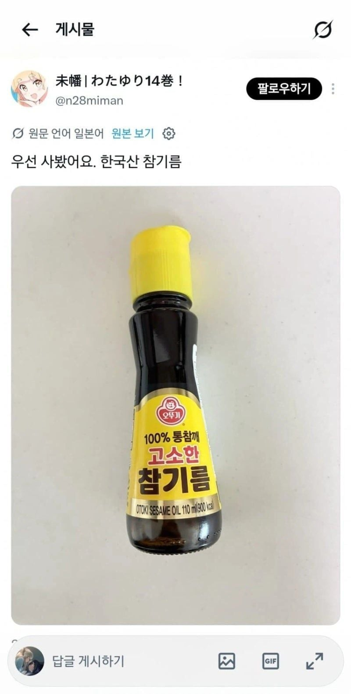
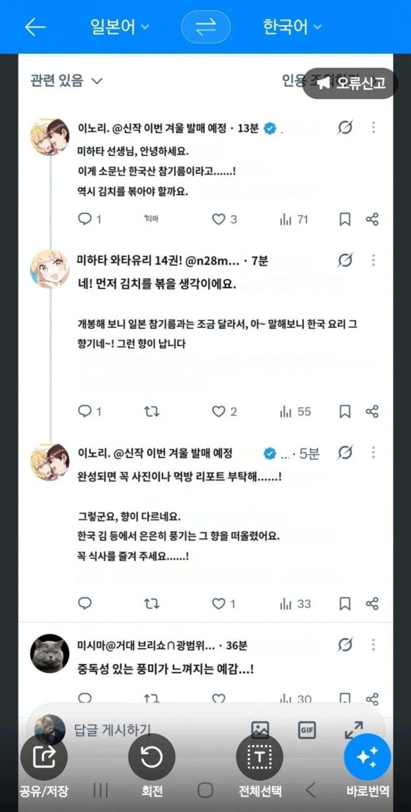

참기름은 소주병>>>>>>캔>>>저병이긴함
오뚜기보다 못한 참기름은 살아남을 수 없음.
오뚜기가 참기름의 딱 보편적인 맛이라
쟤들은 저거 먹여야지 뭘 자꾸 진짜 참기름 타령들을 하고있어 쟤들이 진짜 찾아먹기 시작하면 우리먹을것도 없는데 소문나면 쟤들이랑 방앗간 오픈런 해야하잖아
이미 그들의 여행 루트에는 방앗간이 꼭 들어가있음ㅋㅋㅋㅋㅋㅋㅋ
방앗간 참기름을 먹어봐야지 ㅋㅋㅋ
김치 볶을 때 참기름 넣으면 안되는데...
저건 자취용이라고~
아직 방앗간 참기름은 모르는구나 다행이야
그거 아니야
아 저거 아닌데......
국산이면 포장지부터 국산이라고 강조했을거라 수입일듯 ㅋㅋㅋㅋ
참기름 냄새가 스컹크 냄새랑 같아서 서양인이 기피한다던 글이 생각나네.
서양인: (참기름 좔좔 흐르는 김밥을 쑤셔넣으며) 더 없어?????
참깨(중국, 인도산)
방앗간 에디숀 어디갔어
참기름으로 볶음 하는거 아닌데
휴 다행이다 무라벨 유리병에 빨간 뚜껑 유출된줄 알았네
참기름보단 들기름이 진짜지
아 ... 이제는 국가 기밀이라고 지킬것도 없네 ... 다털렸네 ... 다텰렀어 ....
최약체...